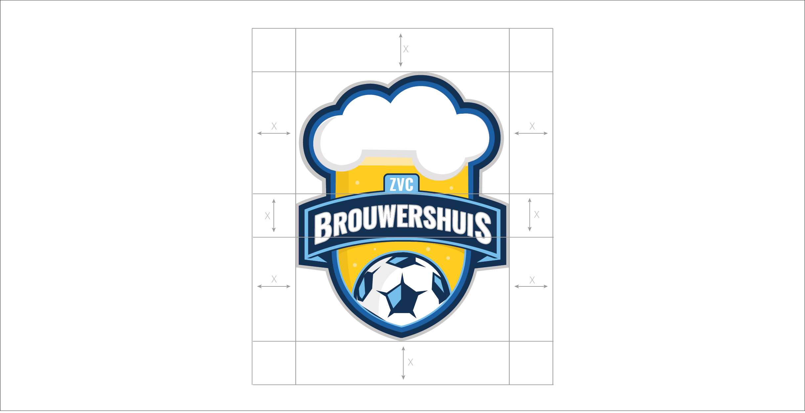

Auteursrecht
Alle logovarianten van ZVC Brouwershuis zijn auteursrechtelijk beschermd. Gebruik ze uitsluitend onder voorwaarde dat er een rechtstreekse link is met ZVC Brouwershuis.

De stijl van het ZVC Brouwershuis logo is gebasseerd op dat van de Amerikaanse sportlogo’s, welke veel kracht en passie uitstralen. In het logo is een glas bier verwerkt onder de vorm van een wapenschild als verwijzing naar de naam Brouwershuis. Daarnaast wordt er naar zaalvoetbal verwezen door het verwerken van een voetbal onderaan in het wapenschild.
The Bounding Box
Respecteer de boundingbox: de verplichte min. vrije ruimte rondom het logo. Hou deze ruimte vrij in alle situaties. Dit beschermt de integriteit van het logo.
Het logo moet ook steeds proportioneel geschaald worden.

Kleurengebruik
Het logo is heeft een kleurenversie en een versie in 1 kleur. Over het algemeen maken we altijd gebruik van de kleurenversie van het logo Waneer dit nodig is kan er gebruik worden gemaakt van de 1 kleur versie.
Achtergronden
Het logo mag enkel op een kleurvlak van de kleur #163253 gebruikt worden, daarnaast mag het gebruikt worden op een witte achtergrond, en het gradient uit de huisstijl.
Het logo kan ook gebruikt worden bij een overgang tussen een kleurvlak in de kleur #163253 en een witte achtergrond of foto. Dit mag enkel waneer de hoek tussen het kleurvlak 70 graden is en dat deze het logo in zijn middenpunt snijd zoals hieronder te zien is.
cmyk of rgb?
CMYK gebruik je voor professioneel drukwerk zoals flyers, brochures...
RGB gebruik je voor online toepassingen zoals online banners.
Foutief gebruik van logo op achtergrond
Het logo mag niet op een ander kleurvlak gebruikt worden dan de kleur#16325. Daarnaast mag het logo niet gewoon op een foto geplaatst worden, en waneer een gradient gebruikt wordt mag deze niet linear zijn en moet het logo boven het middelpunt van het radiale gradient geplaatst worden.


ANDERE FOUTEN IN VERBAND MET HET LOGO
Er mogen geen kleuren buiten het kleurenpallet worden toegevoegd aan het logo, daarnaast mogen de gebruikte kleuren ook niet veranderd worden door andere kleuren binnen het kleurenpallet. Het logo mag ook niet vervormd worden of gerotteerd . Er mogen ook geen tekst of objecten binnen de afstand x van de boundingbox komen.


Het is niet toegestaan om het logo zelf aan te passen.
Let er op dat je het logo niet animeert, in kleur aanpast, schuintrekt, vervormt, de elementen uit elkaar trekt, effecten toepast, uit proportie schaalt of extra typografie toevoegt.
Probeer ook nooit zelf het logo na te maken, het font te veranderen of de verhoudingen aan te passen. En probeer er altijd voor te zorgen dat het contrast tussen het logo en de achtergrond voldoende is.